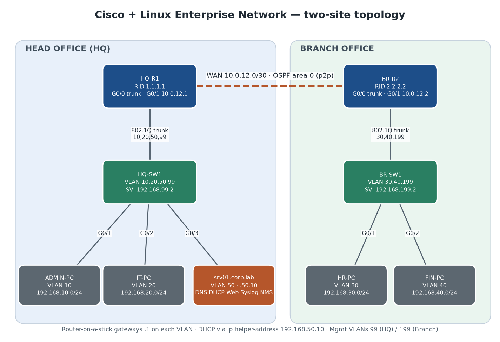
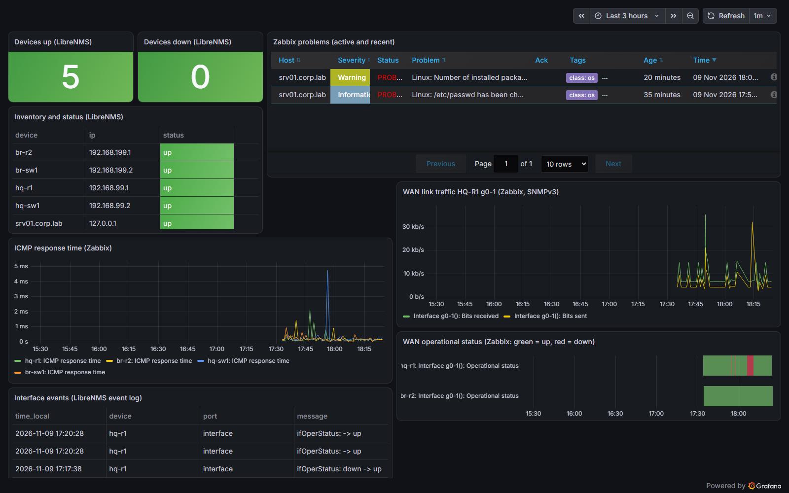

Design, build, secure, automate, monitor and verify a two-site enterprise network. This guide covers every step in order, every tool and what it is for, the exact commands, the results, the problems solved, and a full interview-preparation section.
Scenario. A company has a Head Office (HQ) and one Branch. HQ hosts a shared Linux server. Departments are separated by VLANs. The two sites are joined by a point-to-point WAN link running OSPF. The job is to design, build, secure, automate, monitor and prove the whole network with test evidence.
| Area | What was delivered |
|---|---|
| Cisco routing & switching | Sanitized IOS configs for 2 routers and 2 switches: 7 VLANs, 802.1Q trunks, router-on-a-stick, OSPF area 0, DHCP relay, SSH-only management, ACLs, port security, DHCP snooping, BPDU Guard, Rapid-PVST, SNMPv3 and Syslog. Built and verified in Cisco Packet Tracer 9.0. |
| Linux services (srv01) | Ubuntu Server 22.04 VM: BIND9 DNS, Kea DHCP, Nginx intranet, rsyslog central logging, Net-SNMP v3 agent, UFW firewall, SSH hardening, all built by one idempotent script. |
| End-to-end emulation | The whole topology rebuilt on the VM with Linux network namespaces, VLAN-aware bridges, FRR (OSPF), dhcrelay and nftables ACLs, so that real routed tests can run without licensed Cisco images. |
| Automation | Ansible backs up and sanitizes device configs and checks OSPF. A Python health check (ping and TCP/22 → CSV log) comes with unit tests. |
| Monitoring | LibreNMS and Zabbix poll every device over SNMPv3 authPriv. One Grafana dashboard combines both. Syslog captures link and OSPF events. |
| Remote access | WireGuard VPN on the HQ edge. Admins reach only servers and management networks, and a router-side filter blocks Finance. |
| Documentation & audit | NetBox is the source of truth, loaded by API. An Nmap audit compares the live network with NetBox and checks the firewall and ACL policy. |
| Verification | 22 automated tests with saved raw evidence, 10 troubleshooting challenges, and tcpdump/tshark/Wireshark captures of OSPF, DHCP relay, SNMPv3, WireGuard and Syslog. |
Full → Deleted and then Loading → Full for the neighbor 2.2.2.2.cisco/ routers/ switches/ (IOS configs) · ospf/ · security/ · packet-tracer/ (.pkt + generated configs)
linux/ setup-server.sh · netplan/ dns/ dhcp/ nginx/ firewall/ syslog/ snmp/ · wireguard/
automation/ ansible/ (inventory, vault example, backup + verify-ospf playbooks) · python/ (health_check.py + tests)
monitoring/ snmp/ syslog/ · librenms/ · zabbix/ · grafana/ (provisioned)
ipam/netbox/ install + API import of the addressing plan
testing/ emulation/ (netns-lab.sh, wireguard-lab.sh) · run-tests.sh · results/ · troubleshooting/
nmap/ · capture/ · screenshots/
topology/ addressing-plan.csv/.xlsx · enterprise-topology.png
docs/ build-log.md · limitations.md · cv-entry.md · this guide

| Site | VLAN | Name | Subnet | Gateway | Notes |
|---|---|---|---|---|---|
| HQ | 10 | ADMIN | 192.168.10.0/24 | 192.168.10.1 (HQ-R1 G0/0.10) | DHCP via relay; full access |
| HQ | 20 | IT | 192.168.20.0/24 | 192.168.20.1 (HQ-R1 G0/0.20) | DHCP via relay; blocked from Finance and management |
| HQ | 50 | SERVERS | 192.168.50.0/24 | 192.168.50.1 (HQ-R1 G0/0.50) | srv01 = 192.168.50.10 (static) |
| HQ | 99 | MANAGEMENT | 192.168.99.0/24 | 192.168.99.1 (HQ-R1 G0/0.99) | HQ-SW1 SVI = 192.168.99.2 |
| Branch | 30 | HR | 192.168.30.0/24 | 192.168.30.1 (BR-R2 G0/0.30) | DHCP via relay; blocked from Finance |
| Branch | 40 | FINANCE | 192.168.40.0/24 | 192.168.40.1 (BR-R2 G0/0.40) | Protected by FINANCE-PROTECT |
| Branch | 199 | MANAGEMENT | 192.168.199.0/24 | 192.168.199.1 (BR-R2 G0/0.199) | BR-SW1 SVI = 192.168.199.2 |
| WAN | – | R1–R2 | 10.0.12.0/30 | HQ-R1 .1 / BR-R2 .2 | OSPF point-to-point |
| Both | 999 | PARKING | – | – | Native VLAN of trunks and unused ports (shut) |
| VPN | – | WireGuard | 10.99.0.0/24 | HQ-R1 wg0 10.99.0.1 | Remote admins, advertised in OSPF |
DHCP pools are .100–.199 in each client VLAN. Router IDs: HQ-R1 1.1.1.1, BR-R2 2.2.2.2. The internet link used by the VPN test is 203.0.113.0/30 (TEST-NET-3).
| From \ To | Admin 10 | IT 20 | Servers 50 | Mgmt 99/199 | HR 30 | Finance 40 |
|---|---|---|---|---|---|---|
| Admin 10 | – | ✔ | ✔ | ✔ | ✔ | ✔ |
| IT 20 | ✔ | – | ✔ | ✘ MGMT-PROTECT | ✔ | ✘ FINANCE-PROTECT |
| HR 30 | ✔ | ✔ | ✔ | ✘ MGMT-PROTECT | – | ✘ FINANCE-PROTECT |
| srv01 | ✔ | ✔ | – | ✔ | ✔ | ✔ |
| VPN admins | ✘ | ✘ | ✔ | ✔ | ✘ | ✘ VPN-FILTER |
ip helper-address: one Kea server for every VLAN. Kea picks the pool from the relay address (giaddr).Steps are listed in the order they were done. Each step says what was done, which tools were used, why, and the key commands. Work was committed to GitHub in stages.
| Commit | Time | Stage |
|---|---|---|
| f905f7e | 03:13 | Cisco configs, security controls, OSPF design, addressing plan |
| 89c0be1 | 03:17 | Ubuntu server configs (netplan, BIND9, Kea, Nginx, UFW, rsyslog, SNMPv3) and setup script |
| b726a3b | 03:20 | Ansible playbooks, Python health check with tests, Packet Tracer configs |
| 68d0bf5 · 2e95835 | 03:23–03:25 | Test runner, SNMPv3 agents, troubleshooting runner, topology diagram, workbook |
| 0b01bb0 · d8328d7 | 03:30–03:49 | Packet Tracer build guide, monitoring docs, limitations, CV entry |
| eeaca00 | 04:04 | Full test plan 15/15, troubleshooting 10/10, fixes |
| c9843bd | 04:33 | Topology built and verified in Packet Tracer 9.0 |
| 9f8a988 | 17:23 | LibreNMS (SNMPv3) and WireGuard VPN, 17/17 |
| 3b6c0cb | 18:34 | Zabbix, NetBox, Grafana, Nmap audit, packet analysis, 22/22 |
The 14-page lab guide was read and mapped to a repository layout (guide section 12): a folder for each layer, evidence next to each claim, and no secrets in Git. Tools: Git, GitHub CLI.
git init && git branch -M main
gh repo create muttakin210/Enterprise-Network-Infrastructure-Cisco-Linux --public --source . --push
# .gitignore keeps out: the PDF guide, .lab-local/ (lab passwords), vault.yml, raw backups, *.bin images
The VLAN/subnet plan was written as CSV, then turned into an Excel workbook and a PNG diagram by a Python script
(topology/make_topology_assets.py). Tools: Python (openpyxl, Pillow).
python topology/make_topology_assets.py # -> addressing-plan.xlsx + enterprise-topology.png
Configs for HQ-R1, BR-R2 (IOSv / ISR) and HQ-SW1, BR-SW1 (IOSvL2). Every secret is a
<PLACEHOLDER>. Main parts of HQ-R1:
interface GigabitEthernet0/0.10 description VLAN10-ADMIN encapsulation dot1Q 10 ip address 192.168.10.1 255.255.255.0 ip helper-address 192.168.50.10 ! DHCP relay to Kea on srv01 interface GigabitEthernet0/0.99 encapsulation dot1Q 99 ip address 192.168.99.1 255.255.255.0 ip access-group MGMT-PROTECT out ! protect switch management interface GigabitEthernet0/1 ip address 10.0.12.1 255.255.255.252 ip ospf network point-to-point router ospf 1 router-id 1.1.1.1 passive-interface default no passive-interface GigabitEthernet0/1 network 10.0.12.0 0.0.0.3 area 0 network 192.168.10.0 0.0.0.255 area 0 ! ... 20, 50, 99 ip access-list extended MGMT-PROTECT permit ip 192.168.10.0 0.0.0.255 192.168.99.0 0.0.0.255 permit ip host 192.168.50.10 192.168.99.0 0.0.0.255 permit ip 192.168.199.0 0.0.0.255 192.168.99.0 0.0.0.255 deny ip any any log ip ssh version 2 line vty 0 4 login local transport input ssh access-class VTY-ADMIN in logging host 192.168.50.10 snmp-server group NMS v3 priv access SNMP-NMS snmp-server user monitor NMS v3 auth sha <SNMP_AUTH_SECRET> priv aes 128 <SNMP_PRIV_SECRET>
Switch hardening (HQ-SW1):
vlan 10 / 20 / 50 / 99 / 999 spanning-tree mode rapid-pvst spanning-tree portfast bpduguard default ip dhcp snooping vlan 10,20 interface GigabitEthernet0/0 ! uplink trunk switchport mode trunk switchport trunk native vlan 999 switchport trunk allowed vlan 10,20,50,99 switchport nonegotiate ip dhcp snooping trust interface GigabitEthernet0/1 ! ADMIN-PC access port switchport mode access switchport access vlan 10 switchport port-security maximum 2 switchport port-security mac-address sticky switchport port-security violation restrict spanning-tree portfast ip dhcp snooping limit rate 10
On BR-R2, FINANCE-PROTECT sits outbound on G0/0.40. It permits Admin and srv01, denies IT and HR, and logs the denies.
A VirtualBox VM ENL-Ubuntu-Server was created with an unattended Ubuntu 22.04.5 install (2 vCPU, 2 GB RAM, later 3 GB;
30 GB disk). Host-only networking was broken on this PC, so NAT port forwards bound to 127.0.0.1 are used, plus an internal
network enl-vlan50 for the lab NIC. Tools: VirtualBox / VBoxManage.
VBoxManage createvm --name ENL-Ubuntu-Server --ostype Ubuntu_64 --register VBoxManage modifyvm ENL-Ubuntu-Server --memory 3072 --cpus 2 --nic1 nat --nic2 intnet --intnet2 enl-vlan50 VBoxManage modifyvm ENL-Ubuntu-Server --natpf1 "ssh,tcp,127.0.0.1,2222,,22" # also 8080 http, 8000 LibreNMS, # 8081 Zabbix, 8082 NetBox, 3000 Grafana VBoxManage unattended install ENL-Ubuntu-Server --iso ubuntu-22.04.5-live-server-amd64.iso --user netadmin ... ssh -p 2222 netadmin@127.0.0.1
linux/setup-server.sh builds srv01 from the repository and can be re-run safely. In order, it:
/root/lab-secrets.env (mode 600);br-vlan50 192.168.50.10/24, routes to the lab via 192.168.50.1);corp.lab and reverse zone, checked with named-checkzone), Kea DHCPv4 (checked with kea-dhcp4 -t), rsyslog (one log file per device) and the SNMPv3 agent;ip_forward=0, rp_filter);sudo ./linux/setup-server.sh named-checkzone corp.lab /etc/bind/zones/db.corp.lab kea-dhcp4 -t /etc/kea/kea-dhcp4.conf dig @127.0.0.1 www.corp.lab +short # -> srv01 -> 192.168.50.10 sudo ufw status verbose # default deny incoming, per-service allow rules
Licensed IOSv images were not available, and the guide forbids unofficial ones. So testing/emulation/netns-lab.sh
rebuilds the same design on the VM:
vtysh);srv01's bridge attaches to HQ-SW1's VLAN 50 port, just as the real server plugs into an access port.
sudo ./testing/emulation/netns-lab.sh up # build everything; 'status' and 'down' also exist sudo vtysh -N hq-r1 -c 'show ip ospf neighbor' # 2.2.2.2 Full sudo ip netns exec it-pc ping 192.168.40.100 # blocked by FINANCE-PROTECT (nftables)
Ansible: the inventory has a cisco_ios group whose credentials go in an encrypted vault.yml (only an example file is committed).
backup.yml saves each running config with cisco.ios.ios_config backup: true, then writes a sanitized copy with
secrets replaced. verify-ospf.yml asserts that the neighbor is Full. An emulation variant runs the same logic against the namespaces.
Python: health_check.py reads devices.csv, pings and checks TCP ports in parallel threads, appends to a CSV log, prints a summary,
and exits non-zero if anything is down, which makes it usable from cron or CI. test_health_check.py holds the unit tests.
ansible-playbook playbooks/backup.yml --ask-vault-pass ansible-playbook playbooks/verify-ospf.yml python3 automation/python/health_check.py -i devices.csv -o results/health_log.csv --port 22 python3 -m pytest automation/python -q
DEVICE IP STATUS RTT ms tcp/22 HQ-R1 192.168.99.1 reachable 0.10 open BR-SW1 192.168.199.2 reachable 0.18 open SRV01 192.168.50.10 reachable 0.56 open 6/6 devices reachable
testing/run-tests.sh runs the guide's section 10 test plan against the emulation. It saves the raw output of every command as evidence,
writes test-report.md and redacts every lab secret. The first run gave 9/15. The fixes (UFW for relayed DHCP, client DNS, SNMP MIBs, backup folders,
pipefail) brought it to 15/15. run-challenges.sh injects 10 faults, records the diagnosis and verifies each fix.
sudo ./testing/run-tests.sh # -> testing/results/test-report.md + evidence/T*.txt sudo ./testing/troubleshooting/run-challenges.sh # -> TS-01..TS-10.md
make_pt_configs.py converts the IOSv configs to Packet Tracer syntax (2911 / 2960-24TT port names; PT does not support some
keywords). The topology was built in Packet Tracer 9.0: 9 devices, generated configs pasted in, and SRV01 services (DHCP pools, DNS,
HTTP, Syslog). Verified there:
There are 14 screenshots.
python cisco/packet-tracer/make_pt_configs.py
! verification in PT CLI
show ip ospf neighbor · show ip route ospf · show access-lists · show vlan brief · show interfaces trunk
show port-security · show ip dhcp snooping · show spanning-tree summary
monitoring/librenms/install-librenms.sh follows the official install:
The result: 5/5 up, 31 ports discovered, and a WAN down/up event logged.
sudo ./monitoring/librenms/install-librenms.sh
sudo -u librenms lnms device:add --v3 --security-name=monitor --auth-protocol=SHA --auth-password="$SNMP_AUTH" \
--privacy-protocol=AES --privacy-password="$SNMP_PRIV" --port-association-mode=ifName 192.168.99.1
sudo -u librenms lnms device:poll all
sudo -u librenms /opt/librenms/validate.php
testing/emulation/wireguard-lab.sh adds an internet link (203.0.113.0/30) and a remote-admin laptop namespace, and terminates the tunnel on HQ-R1:
wg0 10.99.0.1/24 on UDP 51820;AllowedIPs list only servers and the two management networks;AllowedIPs;sudo ./testing/emulation/wireguard-lab.sh up sudo ip netns exec hq-r1 wg show wg0 # latest handshake: 1 second ago sudo ip netns exec remote-admin ping 192.168.50.10 # allowed through the tunnel sudo ip netns exec remote-admin ping 192.168.40.100 # dropped (not routed / VPN-FILTER)
install-zabbix.sh installs from the official repository: server, frontend on port 8081, and agent 2. It reuses PHP 8.4 and MariaDB and keeps caches small.
zabbix-configure.py then configures everything through the JSON-RPC API:
sudo ./monitoring/zabbix/install-zabbix.sh
python3 monitoring/zabbix/zabbix-check.py hosts
python3 monitoring/zabbix/zabbix-check.py poll hq-r1 'g0-1\(.*\): Operational status'
python3 monitoring/zabbix/zabbix-check.py problem hq-r1 g0-1 --timeout 150 # Link down opens, then resolves
install-netbox.sh installs NetBox 4.7.4 with Python 3.12 (deadsnakes) and PostgreSQL 17 (PGDG), because both are newer than Ubuntu 22.04 ships.
It also sets up Redis, gunicorn with 2 workers, systemd units and Nginx on port 8082. import-lab.py then loads through the REST API (idempotent):
sudo ./ipam/netbox/install-netbox.sh
NETBOX_ADMIN_PASS=... python3 ipam/netbox/import-lab.py topology/addressing-plan.csv
python3 ipam/netbox/nb-expected.py # documented IPs + DHCP ranges (used by Nmap audit)
install-grafana.sh installs Grafana OSS and the Zabbix plugin. It provisions two data sources:
It also provisions the dashboard "ENL Lab overview", disables sign-up and anonymous access, and opens port 3000 only to admins.

testing/nmap/nmap-audit.sh scans from inside the lab:
sudo ip netns exec admin-pc nmap -n -sn 192.168.10.0/24 192.168.20.0/24 ... 10.0.12.0/30
sudo ip netns exec it-pc nmap -n -Pn -sT -p 22,53,80,3000,8000,8081,8082 192.168.50.10
sudo ip netns exec remote-admin nmap -n -Pn -sU -p 51820,161,53 203.0.113.1
sudo ./testing/nmap/nmap-audit.sh # exit code = failed checks (0)
testing/capture/capture-lab.sh triggers six real events and captures each where it is visible. It saves a pcap and a tshark summary for each.
Wireshark on Windows opens the same files.
| Capture | Finding |
|---|---|
| OSPF after a WAN flap | Hello → DB Description → LS Request → LS Update → LS Ack between 1.1.1.1 and 2.2.2.2 |
| DHCP relay | unicast from the relay to Kea with giaddr 192.168.20.1, which selects the IT pool |
| SNMPv3 | user "monitor" visible, encryptedPDU, no community string; v2c "public" gets no reply |
| WireGuard outside | only UDP 51820 "transport data"; no ICMP visible |
| WireGuard inside (wg0) | the admin's ICMP in clear after decryption |
| Syslog | readable on the wire, which is a known weakness (use TLS/RELP or a management VLAN) |
sudo ip netns exec hq-r1 tcpdump -i g0-1 -nn -w ospf.pcap 'proto ospf'
tshark -r ospf.pcap -T fields -e ip.src -e ospf.msg -e ospf.srcrouter
tshark -r snmp.pcap -Y 'snmp.msgVersion == 3 && snmp.encryptedPDU'
wireshark -r snmp.pcap -Y snmp # Windows GUI
python testing/screenshots/capture-ui.py .lab-local/ui-admin.txt
powershell -File testing/screenshots/capture-wireshark.ps1
git add -A && git diff --cached --name-only | xargs grep -lFf secrets.txt # must print nothing
git commit -m "..." && git push origin main
For every tool: What it is · What it can do (in general) · What I did with it in this project.
What it is: the operating system of Cisco routers and switches, configured from a CLI.
What it can do:
What I did:
What it is: Cisco's free network simulator for learning and labs.
What it can do: simulate routers, switches, PCs and servers with a real-feeling IOS CLI; step through packets in simulation mode; run DHCP, DNS, HTTP and Syslog services on server icons.
What I did: built the full 9-device topology from generated configs and set up the SRV01 services. Then I verified relay DHCP, OSPF, the ACLs, DNS, web, Syslog and the switch security features, with 14 screenshots. Its limits: no SNMPv3, and it cannot connect to real VMs.
What it is: an open-source routing suite for Linux (OSPF, BGP, IS-IS, …) with a Cisco-like shell, vtysh.
What it can do: turn a Linux box into a router; used in data centers, labs and SONiC switches.
What I did: ran OSPF area 0 in the HQ-R1 and BR-R2 namespaces (router IDs 1.1.1.1 / 2.2.2.2, point-to-point WAN, passive LANs). I used it to test adjacency, routes, WAN failure (11 s re-convergence) and the troubleshooting faults (hello mismatch, missing network statement).
What it is: kernel features that give a process its own isolated network stack, plus virtual switches (bridges) and virtual cables (veth pairs).
What it can do: they are the building blocks of containers and Kubernetes networking, and they make lightweight network emulators possible.
What I did: one namespace per router, switch and PC, VLAN-aware bridges as switches with trunk and access ports, and veth pairs as cables.
What it is: the modern Linux packet-filtering framework, the successor to iptables.
What it can do: stateful and stateless filtering, NAT, sets and maps, logging and counters.
What I did: mirrored the Cisco ACLs rule for rule (MGMT-PROTECT, FINANCE-PROTECT) with counters, and built the WireGuard EDGE-IN and VPN-FILTER policy on HQ-R1.
What it is: the Linux equivalent of ip helper-address.
What it can do: forward DHCP broadcasts as unicast to a central server, adding the giaddr.
What I did: relayed every client VLAN to Kea. This also uncovered a real bug: BR-R2 relays from its WAN address, so UFW had to allow 10.0.12.0/30.
What it is: a modern, minimal VPN in the Linux kernel. It uses public-key peers, UDP, and ChaCha20-Poly1305 encryption.
What it can do: remote-access and site-to-site VPNs with very little configuration and high performance.
What I did:
AllowedIPs;What it is: a free type-2 hypervisor (VMware Workstation is the alternative).
What it can do: run VMs with NAT, bridged, host-only and internal networking; snapshots; and full control from the CLI with VBoxManage.
What I did: created the Ubuntu VM with an unattended install. When the host-only driver was missing, I worked around it with 127.0.0.1-bound NAT port forwards and an internal network. Later I added forwards for each web UI.
What it is: a long-term-support Linux server OS. Netplan is its YAML network configuration layer.
What it can do: host any service. Netplan declares interfaces, bridges, VLANs, routes and DNS.
What I did: a bridge br-vlan50 with a static IP 192.168.50.10, lab routes via HQ-R1, and the server resolving through its own BIND.
What it is: the reference authoritative and recursive DNS server.
What it can do: authoritative zones, recursion, views, DNSSEC and zone transfers.
What I did:
corp.lab: servers, devices and gateways, with CNAMEs www, intranet, syslog and nms;168.192.in-addr.arpa;named-checkconf and named-checkzone.What it is: ISC's modern DHCP server, with JSON config and an API. It replaced isc-dhcp-server.
What it can do: multiple subnets and pools, reservations, high availability and lease databases.
What I did: one subnet per client VLAN (pools .100–.199, router option, DNS 192.168.50.10, domain corp.lab). Kea picks the subnet by the relay giaddr.
What it is: a high-performance web server and reverse proxy.
What it can do: static sites, reverse proxying to apps, TLS termination and load balancing.
What I did:
server_tokens off;What it is: the standard Linux syslog daemon.
What it can do: receive logs over UDP/TCP/TLS, filter them, write templated files, and forward to a SIEM.
What I did: a dedicated "remote" ruleset on UDP and TCP 514 that writes one file per device plus all-devices.log. It recorded the OSPF Full→Deleted→Full sequence during the WAN test.
What it is: SNMP agent (snmpd) and client tools (snmpget, snmpwalk).
What it can do: expose and query device metrics: interfaces, CPU, disks, processes.
What I did: SNMPv3 user monitor (authPriv, SHA/AES) on srv01 and on every emulated device. Tests prove that v2c and wrong keys are refused.
What it is: UFW is a simple front end to the Linux firewall. OpenSSH is the SSH server.
What it can do: per-port and per-source allow rules with a default deny; key-based, restricted remote login.
What I did:
What it is: agentless automation over SSH using YAML playbooks. The cisco.ios collection drives IOS.
What it can do: config backups, pushing standard configs, compliance checks, upgrades, and fleet-wide show commands.
What I did:
backup.yml: config backups with automatic sanitizing;verify-ospf.yml: asserts the OSPF neighbor is Full;What it is: the main scripting language of network automation (Netmiko, NAPALM, Nornir, requests).
What it can do: health checks, API integrations, report generation and data processing.
What I did:
health_check.py: threaded ping and TCP checks with a CSV log and unit tests;What it is: an open-source, auto-discovering network monitoring system (PHP/Laravel, MariaDB, RRD).
What it can do: discover devices and ports over SNMP, graph traffic, errors, CPU and memory, keep an event log, send alerts, and run billing and weathermaps.
What I did: installed it by script, added all devices over SNMPv3, discovered 31 ports, and logged the WAN ifOperStatus up→down→up event. Its database also feeds Grafana.
What it is: an enterprise monitoring platform: server, agents, SNMP, templates, triggers, actions and an API.
What it can do: monitor networks, servers, apps and the cloud; collect with SNMP, agents, HTTP and scripts; fire triggers that escalate and notify; discover with LLD; manage everything through the API.
What I did:
What it is: a dashboard and visualization platform.
What it can do: connect to many data sources (Prometheus, SQL, Zabbix, Loki…), build dashboards and alerts, and provision them as code.
What I did: one provisioned dashboard combining Zabbix and LibreNMS, with read-only accounts for both and anonymous access disabled.
What it is: the standard open-source tool for documenting networks (IP addresses, VLANs, devices, cables, racks), built on Django and PostgreSQL.
What it can do: act as the "intended state" that automation reads from; IPAM; cabling and rack documentation; a REST and GraphQL API; webhooks.
What I did: loaded the whole design through the API (idempotent), then used it as the reference for the Nmap audit: documentation vs reality.
What it is: the standard network scanner.
What it can do: host discovery, port scanning (TCP, UDP), service and version detection, OS detection, and NSE scripts.
What I did: an audit that proves:
What they are: tcpdump captures packets on the CLI. tshark is Wireshark's CLI decoder. Wireshark is the GUI analyzer.
What they can do: see exactly what is on the wire, troubleshoot protocols, verify encryption, and measure timing.
What I did: captured OSPF adjacency building, DHCP relay with giaddr, SNMPv3 encryption, WireGuard inside and outside the tunnel, and plaintext Syslog. The checks were automated with tshark filters and the captures viewed in Wireshark.
| Tool | Used for |
|---|---|
| Git / GitHub / gh | Version control, a public portfolio repo and staged commits |
| MariaDB / PostgreSQL / Redis | Databases for LibreNMS and Zabbix (MariaDB), NetBox (PostgreSQL) and the NetBox task queue and cache (Redis) |
| PHP-FPM / gunicorn | Application servers behind Nginx (PHP apps / Django) |
| systemd | Services and timers (librenms-scheduler, netbox, netbox-rq) |
| Playwright | Scripted, repeatable screenshots of the web UIs |
| PowerShell / Bash | Windows-host automation (VBoxManage, Wireshark capture) and all Linux scripts |
| openpyxl / Pillow | Excel addressing workbook and topology image |
configure terminal vlan 10 / name ADMIN interface g0/0.10 / encapsulation dot1Q 10 / ip address 192.168.10.1 255.255.255.0 / ip helper-address 192.168.50.10 interface g0/1 / switchport mode trunk / switchport trunk native vlan 999 / switchport trunk allowed vlan 10,20,50,99 interface f0/1 / switchport mode access / switchport access vlan 10 / switchport port-security / spanning-tree portfast router ospf 1 / router-id 1.1.1.1 / passive-interface default / no passive-interface g0/1 / network 10.0.12.0 0.0.0.3 area 0 ip access-list extended FINANCE-PROTECT / permit ip 192.168.10.0 0.0.0.255 192.168.40.0 0.0.0.255 / deny ip any any log crypto key generate rsa modulus 2048 / ip ssh version 2 / line vty 0 4 / transport input ssh / login local copy running-config startup-config (or: write memory)
show ip interface brief show running-config | section ospf show vlan brief show interfaces trunk show interfaces g0/1 switchport show ip ospf neighbor show ip ospf interface brief show ip route ospf show access-lists show ip dhcp snooping binding show port-security interface f0/1 show spanning-tree summary show logging show snmp user ping 192.168.50.10 source g0/0.10 traceroute 192.168.40.100 debug ip ospf adj (lab only)
ip -br addr / ip -br link / ip route / ip neigh ss -tulpn (listening sockets) bridge vlan show ip netns list ; ip netns exec it-pc ping 192.168.40.1 sudo vtysh -N hq-r1 -c 'show ip ospf neighbor' sudo nft list ruleset dig @192.168.50.10 www.corp.lab +short dig -x 192.168.50.10 sudo ufw status numbered sudo journalctl -u kea-dhcp4-server -f tail -f /var/log/remote/all-devices.log logger -n 192.168.50.10 -P 514 -d "test" snmpwalk -v3 -l authPriv -u monitor -a SHA -A "$SNMP_AUTH" -x AES -X "$SNMP_PRIV" 192.168.99.1 IF-MIB::ifOperStatus
systemctl status nginx named kea-dhcp4-server rsyslog snmpd zabbix-server grafana-server netbox
sudo -u librenms lnms device:add / device:poll all / ./validate.php
wg show ; wg-quick up lab
ansible-playbook playbooks/backup.yml --ask-vault-pass ; ansible-vault create vault.yml
nmap -sn 192.168.10.0/24 ; nmap -sT -p 22,80 host ; nmap -sU -p 161 host ; nmap -sV host
tcpdump -i eth0 -nn -w cap.pcap 'udp port 67 or udp port 68'
tshark -r cap.pcap -Y dhcp -T fields -e dhcp.ip.relay
curl -s -o /dev/null -w '%{http_code}' http://127.0.0.1:8081/
ospf ospf.msg == 4 (LS Update) dhcp dhcp.ip.relay == 192.168.20.1 snmp snmp.msgVersion == 3 && snmp.encryptedPDU wg wg.type == 4 (transport data) icmp syslog contains "LINEPROTO" ip.addr == 192.168.50.10 tcp.port == 22
# on Windows (host) git clone https://github.com/muttakin210/Enterprise-Network-Infrastructure-Cisco-Linux.git # create the Ubuntu 22.04 VM (3 GB RAM, NAT forwards 2222/8080/8000/8081/8082/3000), copy the repo in, then on the VM: sudo ./linux/setup-server.sh # 1. server services + UFW sudo ./testing/emulation/netns-lab.sh up # 2. emulated Cisco topology (OSPF, VLANs, ACLs) sudo ./testing/emulation/wireguard-lab.sh up # 3. remote-admin VPN sudo ./monitoring/librenms/install-librenms.sh # 4. LibreNMS http://127.0.0.1:8000 sudo ./monitoring/zabbix/install-zabbix.sh # 5. Zabbix http://127.0.0.1:8081 sudo ./ipam/netbox/install-netbox.sh # 6. NetBox http://127.0.0.1:8082 sudo ./monitoring/grafana/install-grafana.sh # 7. Grafana http://127.0.0.1:3000 sudo ./testing/run-tests.sh # 8. T01-T22 -> testing/results/test-report.md sudo ./testing/troubleshooting/run-challenges.sh # 9. TS-01..TS-10 # Packet Tracer: open cisco/packet-tracer/enterprise-lab.pkt (or build from configs/ with the README steps)
/root/lab-secrets.env (mode 600). Nothing secret is ever committed.| ID | Test | What is checked | Result |
|---|---|---|---|
| T01 | Basic reachability | every client pings its gateway | PASS |
| T02 | DHCP via relay | clients lease from their own VLAN pool through the relay | PASS |
| T03 | OSPF | neighbor Full, remote LANs installed | PASS |
| T04 | Inter-VLAN and WAN | permitted flows pass; traceroute path across the WAN | PASS |
| T05 | Web | HTTP 200 for www.corp.lab from every VLAN | PASS |
| T06 | DNS | forward, reverse and recursive answers | PASS |
| T07 | FINANCE-PROTECT | IT/HR blocked (counters rise), Admin allowed | PASS |
| T08 | MGMT-PROTECT | only Admin and srv01 reach the management SVIs | PASS |
| T09 | WAN failure | adjacency drops, Syslog event, re-converges (11 s) | PASS |
| T10 | Central Syslog | per-device files with source IPs | PASS |
| T11 | SNMPv3 | authPriv answers; v2c and wrong keys refused | PASS |
| T12 | Ansible backup | backups created, OSPF asserted Full | PASS |
| T13 | Python health check | all devices reachable, CSV written | PASS |
| T14 | Server hardening | UFW default deny, root SSH off | PASS |
| T15 | Linux services | all services active | PASS |
| T16 | WireGuard | handshake, permitted routes, Finance blocked even with widened AllowedIPs | PASS |
| T17 | LibreNMS | UI 200, 5 devices up via v3, port events | PASS |
| T18 | Zabbix | 5 hosts available; Link down opens and resolves | PASS |
| T19 | NetBox | import correct and idempotent | PASS |
| T20 | Grafana | both data sources OK, dashboard present, anonymous 401 | PASS |
| T21 | Nmap audit | 0 undocumented hosts; policy as designed | PASS |
| T22 | Packet analysis | OSPF LSUs, giaddr, SNMP encrypted, only UDP 51820 outside | PASS |
| ID | Symptom | Root cause | How it was found |
|---|---|---|---|
| TS-01 | PC cannot reach its gateway | access port in the wrong VLAN | show vlan brief / bridge vlan show |
| TS-02 | VLAN 10 ↔ 20 fails | subinterface shut down | show ip interface brief |
| TS-03 | Branch cannot reach HQ server | missing OSPF network statement | show ip route on BR-R2, then the HQ-R1 OSPF config |
| TS-04 | OSPF neighbor does not form | hello/dead interval mismatch | show ip ospf interface on both ends |
| TS-05 | VLAN missing across the trunk | VLAN pruned from the allowed list | show interfaces trunk |
| TS-06 | DNS unreachable | no firewall rule for 53 | dig timeout → ufw status |
| TS-07 | No DHCP leases at the branch | missing ip helper-address / relay | tcpdump shows broadcasts that never reach Kea |
| TS-08 | ACL blocks legitimate traffic | deny placed above the permit | show access-lists (counters, order) |
| TS-09 | Ansible cannot connect | SSH not allowed on management | nc -zv, VTY ACL / sshd |
| TS-10 | SNMP cannot see a device | SNMPv3 key mismatch | snmpget → "authorizationError / wrong digest" |
These are real problems from the build, not invented ones. They make the best interview stories.
| # | Problem | Root cause | Fix |
|---|---|---|---|
| 1 | VirtualBox host-only adapter could not be created | network driver missing on the host | NAT port forwards on 127.0.0.1 + internal network |
| 2 | SSH refused after reboot | the banner came from the installer; openssh-server was not installed | installed it from the console; the script installs it now |
| 3 | Branch clients got no DHCP | relay sends from the WAN IP 10.0.12.2; UFW allowed only 192.168.0.0/16 | UFW rule for udp/67 from 10.0.12.0/30 |
| 4 | Clients could not resolve names | dhclient handed DNS to systemd-resolved, which does not run in the namespace | write the leased DNS into the namespace's resolv.conf |
| 5 | Traceroute showed only * | UDP probes hit the UFW default deny | use ICMP traceroute (-I) |
| 6 | snmpget "Unknown Object Identifier" | Ubuntu ships without MIB files | snmp-mibs-downloader + enable MIBs |
| 7 | SNMP keys appeared in evidence | the test log echoed full command lines | redaction + a pre-commit scan for every secret |
| 8 | Ansible "destination does not exist" | backup folders were assumed to exist | task creates raw/ and sanitized/ |
| 9 | Checks failed although the output looked right | pipefail + grep -q → SIGPIPE | removed pipefail from the test scripts |
| 10 | PT rejected config lines and ACLs lost their deny | PT's parser lacks some keywords; a rejected paste line is skipped silently | converter rewrites them; show access-lists after every paste |
| 11 | "Invalid DNS" in PT | value typed twice | clear the field, enter it once |
| 12 | LibreNMS composer: lock file incompatible | current LibreNMS needs PHP ≥ 8.4 | PHP 8.4 from ppa:ondrej/php |
| 13 | "No application encryption key" | the web installer normally creates APP_KEY | php artisan key:generate in the script |
| 14 | --seclevel option does not exist | LibreNMS renamed the SNMPv3 flags | new flag names, found with --help |
| 15 | Unknown column 'snmpver' | credentials moved to an encrypted secrets table | test joins the new tables |
| 16 | Zabbix refused MariaDB 10.6 | Zabbix 8.0 requires ≥ 10.11 | documented AllowUnsupportedDBVersions=1 (shared DB) |
| 17 | hostinterface.update unknown | not in the Zabbix 8.0 API | host.update with interfaceid |
| 18 | Grafana: no permission for hostgroup.get | Zabbix 8.0 disables API access in its default roles | dedicated read-only role (*.get only) |
| 19 | NetBox would not install on 22.04 | needs Python ≥ 3.12 and PostgreSQL ≥ 15 | deadsnakes Python 3.12 + PGDG PostgreSQL 17 |
| 20 | Zabbix missed the WAN failure | admin shutdown made LLD treat the port as lost and disable its items; interface items are dependent items | simulate a far-end (carrier) failure; poll the master walk item |
| 21 | Nmap said open|filtered | UDP + silent drop gives no reply | corrected the expectation (that result is the drop) |
| 22 | Grafana problems panel empty | wrong panel id / query field in plugin 6.x | fixed the panel type and query |
| 23 | Events 6 h in the future | local time stored, Grafana assumed UTC | format the time as text in SQL |
nonegotiate);ip_forward=0;server_tokens off.| Area | Limitation | How it is handled |
|---|---|---|
| Cisco images | no licensed IOSv/IOSvL2, so no GNS3 with real IOS | IOS configs verified in Packet Tracer; end-to-end tests on a Linux emulation of the same design |
| Packet Tracer | no SNMPv3; cannot connect to VMs | SNMPv3 and monitoring tested in the emulation |
| Emulation | FRR/nftables behave like IOS but are not IOS; port security and DHCP snooping cannot be emulated | those were verified in Packet Tracer |
| Zabbix DB | MariaDB 10.6 below the 8.0 minimum | documented override; Ubuntu 24.04 for production |
| Memory | 4 web platforms on a 3 GB VM | swap, small caches, 2 NetBox workers |
allowed vlan and use an unused native VLAN 999.encapsulation dot1Q). Each subinterface is the VLAN's gateway, and the router routes between them. Good for small sites; a Layer-3 switch scales better.passive-interface default, so OSPF only talks on the WAN. That is more secure and less noisy.show access-lists hit counters reveal it.ip helper-address) unicasts them to the server and adds the giaddr. The server uses the giaddr to pick the right subnet's pool.named-checkzone catches syntax and serial mistakes before a reload breaks DNS.ip_forward=0, rp_filter, only the needed services, generated secrets in a 600 file, and server_tokens off.*.get and a database user with SELECT on three tables.show vlan, show interfaces trunk);show ip route);show access-lists, ufw);ss -tulpn, logs).show ip ospf interface on both sides and fix the MTU (or ip ospf mtu-ignore as a workaround).show ip ospf neighbor, show vlan brief, show access-lists, show interfaces trunk.--help, a lab test, packet capture. That is exactly how this project was built.| Term | Meaning |
|---|---|
| 802.1Q | VLAN tagging standard: a 4-byte tag carries the VLAN ID on trunks |
| ACL | Access Control List: ordered permit/deny rules, first match wins, implicit deny at the end |
| authPriv | SNMPv3 security level with authentication (SHA) and privacy/encryption (AES) |
| BPDU Guard | Err-disables an edge port that receives spanning-tree BPDUs |
| DCIM / IPAM | Data-center infrastructure management / IP address management (NetBox does both) |
| DHCP relay / giaddr | Forwards DHCP to a central server; giaddr = the relay's address, used to choose the pool |
| DHCP snooping | Switch feature that blocks DHCP server replies on untrusted ports |
| Idempotent | Can be run many times with the same end result |
| LLD | Zabbix low-level discovery: automatically creates items for discovered interfaces and disks |
| LSA / LSU | OSPF link-state advertisement / the update packet that carries LSAs |
| Native VLAN | The VLAN sent untagged on a trunk; set to unused 999 here |
| Network namespace | Linux isolated network stack; used here as virtual routers, switches and PCs |
| Passive interface | OSPF advertises the network but sends no hellos there |
| pcap | Packet-capture file format read by Wireshark and tshark |
| Router-on-a-stick | One router port with a subinterface per VLAN for inter-VLAN routing |
| Source of truth | The authoritative record of intended network state (NetBox) |
| Trunk | A link that carries multiple VLANs with tags |
| UFW | Uncomplicated Firewall: Ubuntu's simple firewall front end |
| WireGuard AllowedIPs | Which destination networks a peer may send to or receive from through the tunnel |